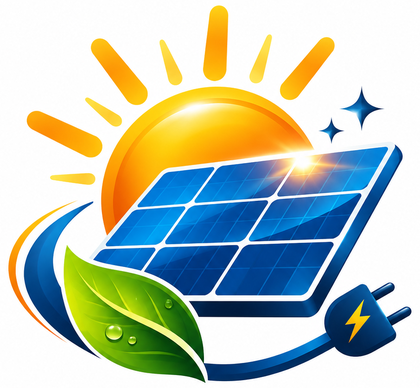
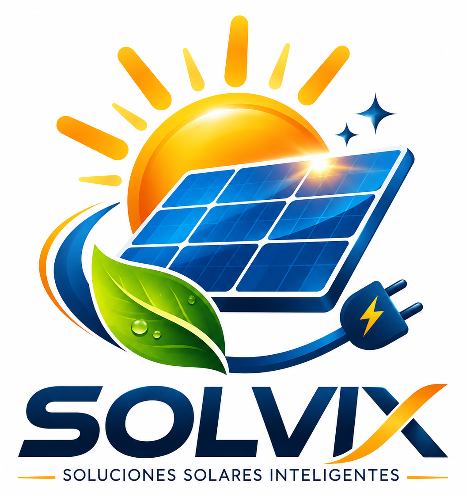

01 / FÓSILES
Recursos fósiles
Gas natural, carbón, combustóleo y diésel. Su uso suele implicar combustión y emisiones directas de CO₂.

SOLVIXSOLVIX / ATLAS ELÉCTRICO DE MÉXICO
MÓDULO 00 — RECURSOS ENERGÉTICOS
Descubre qué recursos utilizamos, cómo se transforman en electricidad y qué nos dicen los datos de México.
Comenzar a explorar
01 / COMPRENDE LA ENERGÍA
No todo es un combustible, ni toda fuente de energía es una tecnología. Selecciona cada concepto para distinguirlo.
01 / FÓSILES
Gas natural, carbón, combustóleo y diésel. Su uso suele implicar combustión y emisiones directas de CO₂.
02 / NUCLEARES
El uranio libera energía térmica mediante fisión. Es una fuente no renovable que puede clasificarse como limpia.
03 / RENOVABLES
Radiación solar, viento, agua, calor geotérmico y biomasa: recursos que se reponen mediante procesos naturales.
02 / SIGUE LA TRANSFORMACIÓN
Elige una ruta y luego toca cada etapa para entender qué está sucediendo físicamente.
Diagrama conceptual simplificado: no representa todas las pérdidas, equipos auxiliares o etapas de cada central.
03 / PON A PRUEBA TU CRITERIO
Clasifica 15 tarjetas. Puedes responder usando botones, sin arrastrar elementos.
CLASIFICA EL RECURSO O LA TECNOLOGÍA
Las tarjetas de tecnologías se han elegido cuando su fuente es inequívoca. Por ejemplo, «vapor convencional» por sí sola no determina qué combustible se utiliza.
04 / DATOS REALES · CFE
Generación bruta de CFE, no generación de todo México. Selecciona un año y una tecnología.
Fuentes: Informe Anual CFE 2023 (2022–2023, anexo estadístico) e Informe Anual CFE 2024 (2024, tabla de generación bruta). Cifras de CFE, no del SEN. Los renglones suman 1 GWh menos que el total impreso en 2022 y 2023; para 2024 coinciden.
38,982.9 GWh de generación bruta limpia de CFE. Incluye energía nuclear, que no es renovable.
Fuente: Informe Anual CFE 2024, p. PDF 30.Tecnología de generación; utiliza una turbina de gas y recupera calor para un ciclo de vapor.
05 / COMPARA RECURSOS
Selecciona dos recursos para descubrir sus diferencias sin asumir factores de emisión no documentados.
06 / INTERPRETA, NO MEMORICES
Cinco reflexiones opcionales, sin calificación ni obligación de responder.
SOLVIX · TE1020
Recursos energéticos · Módulo 00 del Atlas Eléctrico de México